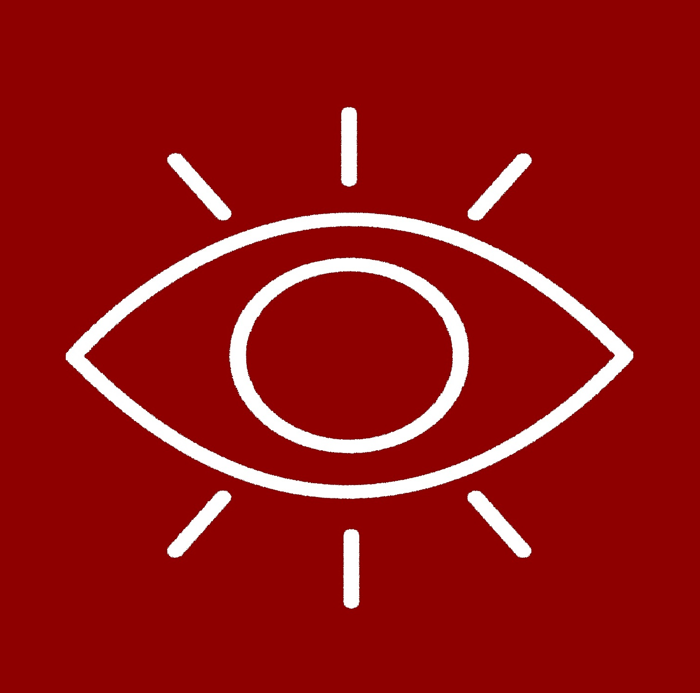

Missão
É o propósito de a empresa existir. É sua razão de ser. ela costuma a ser bastante inspiradora e também com a possibilidade de mudança ao longo do tempo e amadurecimento da empresa.
Exemplo: Veja como exemplo a missão da Templum
“Existimos para fortalecer empresas”.

Visão
Visão pode ser entendido como o destino final em que se quer chegar. Podemos dizer que é um sonho com data para acontecer. O que esperamos que aconteça com a nossa empresa nos próximos 05 ou 10 anos? É o caminho que irá nortear as ações estratégicas da empresa no período indicado, é a indicação do caminho desejado para ser percorrido.
Exemplo: nossa visão é
“Ser a melhor empresa de consultoria do Brasil”
Valores
Valores são convicções claras e fundamentais que a organização defende e adota como guia para a gestão do seu negócio (crenças, posturas éticas: certo e errado, bom e ruim, importante e não importante). Os valores são tudo o que é inegociável na sua empresa, aquilo que pode ou não pode fazer ali dentro.
Exemplo: Como exemplo, veja os valores da Templum neste vídeo e organograma!